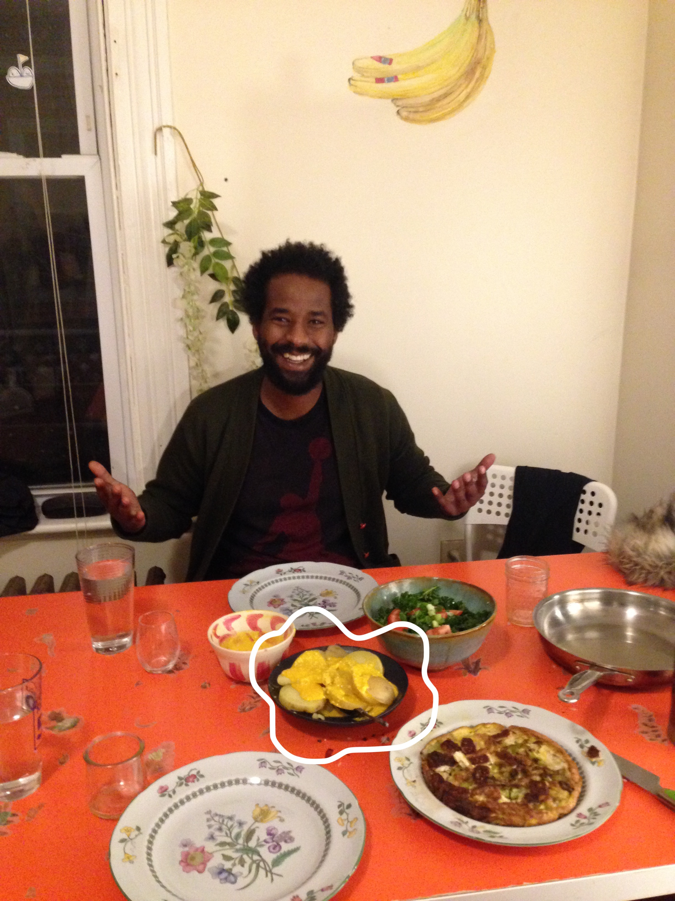

papa a la huancaína
come to papa
- 1 tbsp aji amarillo paste

- chunk of queso fresco
- 2 tbsp cream or evaporated milk
- 1 clove garlic
- 2 crushed crackers
- 3 yellow potatos
- slice the potatoes into thickish rounds, and put in a pan of salted water. bring to the boil
- put all the other ingredients into the blender, blend till smooth. add salt to taste.
- when the potatoes are soft, cover with the sauce